从 RxJava 2 转向使用 Kotlin 流：多线程

简介
长期以来，RxJava 一直是 Android 响应式解决方案的无可争议的引领者。虽然 Kotlin 不断扩展，并且引入了冷流（Flow）的概念，情况可能在未来几年迅速改变，但这并不意味着 RxJava 会退出历史舞台。虽说响应式编程最初与线程无关，但合适的线程的并发和并行对程序而言仍然非常重要。在本文中，我们将简要回顾 RxJava 2 中的线程（对其用法做一些基本说明），然后讨论一下 Kotlin Flow 中线程的工作原理，让我们能在不影响功能的情况下能够顺利地完成代码迁移。
让我们从对 RxJava 2 的简短回顾开始。
RxJava 2
RxJava 2 的 Observable 和 Kotlin 的 Flow 都是冷流，意味着其中的代码在订阅之前都不会被执行。
除了
Observable以外，在 RxJava 中其实还有其它类型，例如Flowable或是Single等。但在本文中，我们只会讲讲Observable，因为它们的原理是相似的。
RxJava Observable 的最基础使用如下所示：
observeSomething()
.subscribeOn(io())
.observeOn(mainThread())
.subscribe { result -> println(result) }
在上述代码中，我们订阅了输入输出事件。程序运行时，只要发生了 I/O 事件，就会把接收到的结果在主线程打印出来。
subscribeOn
subscribeOn 是一个运算符，用于声明将在哪一个调度器上设置一个 Observable 的订阅。“将在哪一个调度器上订阅”是指“将在哪个调度器上启动我们的执行程序”。
第一个划重点的地方是：我们并不需要管 subscribeOn 具体在哪个地方声明。例如我们可以这样：
observeSomething()
.subscribeOn(io())
.observeOn(mainThread())
.subscribe { result -> println(result) }
也可以这样：
observeSomething()
.observeOn(mainThread())
.subscribeOn(io())
.subscribe { result -> println(result) }
上述两种情况的运行结果是一样的，这并不意外。我们通过在这一串代码链中声明了这些运算符声明了这个链的开始，但其中的某些运算符本身并不依赖于声明的位置，就例如上面的例子那样。
第二个划重点的地方是，因为一个链并不能同时在多个调度器处启动，因此我们无需在链中添加多个 subscribeOn，因为只有其中之一会起作用。如果出于某种原因你将多个 subscribeOn 运算符放在链中，则最上面的一个将被使用，而最下面的将被忽略：
observeSomething()
.subscribeOn(io()) // 这个会被使用上
.observeOn(mainThread())
.subscribeOn(io()) // 这个会直接被忽略
.subscribe { result -> println(result) }
observeOn
subscribeOn 表示将在哪个调度器上启动链，而 observeOn 表示将在哪个调度器上运行线程。实际上，这意味着 observeOn 会更改下面的链中的运行的线程的调度器。
/* 1 */ observeSomething()
/* 1 */ .subscribeOn(io())
/* 2 */ .observeOn(mainThread())
/* 2 */ .subscribe { result -> println(result) }
在这里，我们看到从链开始，直到链上的 observeOn 定义是第一部分，然后 observeOn 更改链要在 mainThread 调度器上运行，因此现在以下全部内容都在 mainThread （第二部分）上执行。
与 subscribeOn 不同，实际上如果真的需要，我们可以添加多个 observeOn：
/* 1 */ observeSomething()
/* 1 */ .subscribeOn(io())
/* 2 */ .observeOn(computation())
/* 2 */ .map { result -> result.length }
/* 3 */ .observeOn(mainThread())
/* 3 */ .subscribe { result -> println(result) }
如上面的例子那样，我们先从网络上获取一些数据，接着进行一些计算处理，再打印结果。。我们添加了多个 observeOn，让程序首先切换到 computation 调度器（这样做的目的是在后台线程中进行计算，这是第二部分），然后切换到 mainThread 打印结果。
just + defer
subscribeOn 的一个常见错误是将它与 Observable.just 一起使用。
Observable.just(loadDataSync())
.subscribeOn(io())
.observeOn(mainThread())
.subscribe { result -> println(result) }
just 参数的值是立即计算的，而不是在订阅时才计算的。这意味着，如果您在主线程上创建此类可观察的对象，那么可能会在主线程上进行大量潜在的计算。虽说订阅将在 io 上正确完成，但是 just 的值将在订阅之前就被计算出来了。
解决此问题的方法之一是将你的 Observable.just 调用包装到 Observable.defer 中，这样调用所执行的所有内容都将在订阅时以及在我们位于 subscribeOn 处所声明的调度器上进行计算：
Observable.defer { Observable.just(loadDataSync()) }
.subscribeOn(io())
.observeOn(mainThread())
.subscribe { result -> println(result) }
flatMap 的并发和并行
另一个棘手的事情来自使用运算符 flatMap 和我们对并发性和并行性的理解。
例如，当我们拥有 ID 列表流，并且我们需要对每一个 ID 都执行一次从网络中加载数据：
Observable.fromIterable(listOf("id1", "id2", "id3"))
.flatMap { id ->
loadData(id)
}
.subscribeOn(io())
.observeOn(mainThread())
.toList()
.subscribe { result -> println(result) }
我们在这里的预期是，我们已经订阅了 io，io() 的底层有线程池，因此对每个 id 的 loadData 的调用是并行的。但是事实并非如此。我们使用 flatMap 编写了并发代码，但它不是并行运行的，其原因是我们告诉了程序我们要在 io 上启动链。我们的链的起点在 flatMapIterable 上，这意味着在订阅后，将使用 io 池中的一个线程，并在该单个线程上运行所有线程。为了改变行为并使我们的代码并行运行，我们需要将 subscribeOn 移动到 flatMap 之内：
Observable.fromIterable(listOf("id1", "id2", "id3"))
.flatMap { id ->
loadData(id)
.subscribeOn(io())
}
.observeOn(mainThread())
.toList()
.subscribe { result -> println(result) }
一旦执行到了 flatMap，每个内部的可观察对象（flatMap 内部的可观察对象）都将被订阅。意味着在每一次执行 loadData 函数，都会有一个订阅，从 io 池中获取新线程。这样我们就达到了并行性。
因此，当我们使用诸如 flatMap 之类的运算符时，我们的链应该有多个订阅点：一个用于原始链起点，每个用于内部的可观察点：
/* 订阅点 1 */ Observable.fromIterable(listOf("id1", "id2", "id3"))
.flatMap { id ->
/* 订阅点 2 */ loadData(id)
.subscribeOn(io())
.flatMap {
/* 订阅点 3 */ loadData2(id)
.subscribeOn(io())
}
}
.observeOn(mainThread())
.toList()
.subscribe { result -> println(result) }
代码中的注释指向了每一个订阅发生的位置。通过使用 subscribeOn，我们可以声明在这些情况下应该在哪个调度程序订阅上进行。
单线程运行
最后，但也同样重要的是，如果我们不使用 subscribeOn 或 observeOn，那么代码将是同步进行的，所有执行将是顺序执行的，并且在下一个语句的可观察到的完整执行之前是暂停的。
以上就基本上是 RxJava 中的线程的全部内容，让我们现在走进 Kotlin 流。
Kotlin 流
Kotlin 流的最基础使用方法如下所示：
CoroutineScope(Job() + Dispatchers.Main).launch {
observeSomething()
.flowOn(Dispatchers.IO)
.collect { result -> println(result) }
}
现在，我们有了许多与协程相关的概念，可能需要对其进行解释。我们不会深入介绍协程这个功能或是 Kotlin Flow，因此，如果您不熟悉协程，最好先阅读有关协程的文档。
该示例在某种程度上与 RxJava 部分中使用的示例相同：我们观察了 io 的一些变化，然后在 main 上打印结果，尽管代码有所不同。让我们找出区别以及它是如何工作的。
首先要注意的是，只能在某些协程范围内收集流（因为 collect 方法需要在 suspend 函数下执行）。因此，我们创建了合并范围，并在该范围内“启动”了新的协程。在启动的协程中，我们现在可以收集流。
关于 Kotlin 流和收集功能的重要一件事是称为上下文保留的功能。这意味着我们无需声明要在哪个调度器上收集数据，该调度程序始终与我们从流中收集数据的范围相同。
因此，如果要在 Main 中进行收集，则需要在协程中使用 Dispatchers.Main 来调用 collect 函数。
flowOn
这是一个运算符，用于更改工作流所处的上下文（尤其是线程调度）。
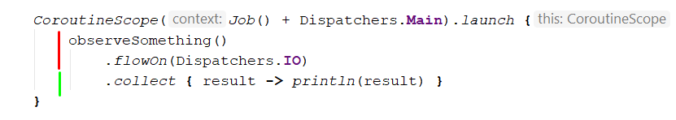
因此，在上面的示例中，通过编写 flowOn(Dispatchers.IO)，我们告诉了程序我们希望在输入输出上运行执行所有代码。
如果像以前的 RxJava 一样在 map 内部添加一些计算，我们将得到以下结果：
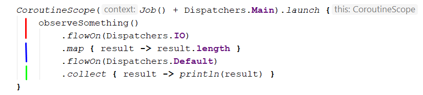
我们将看到，我们基本上可以通过在运算符之后声明 flowOn 来更改运算符的工作位置。
launchIn
关于 collect 函数的一件重要事情是它带有 suspend 声明的。这意味着当我们调用 collect 函数的时候，执行会被暂停直到流的完成。
因此，如果在同一个协程中放入两个 collect 函数，那么第一个将有效地阻止第二个执行：
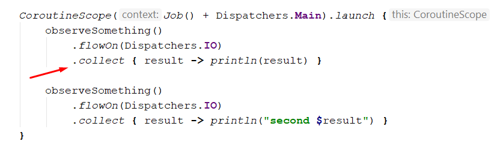
在这里我们能够看到打印了返回值出来，但并没有显示第二次的返回值，因为第一个 collect 函数会被暂停并且不允许进行第二次 collect 函数的执行。
要想解决这个问题我们需要在不同的协程中启动各自流。
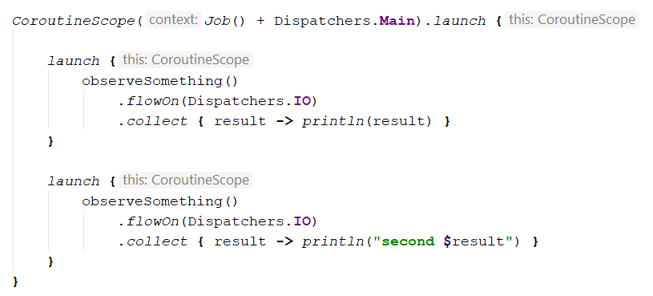
但是这个代码看起来并不漂亮，并且要使其看起来更好一点（没有附加的嵌套级别），我们可以将 launchIn 扩展功能（只是个在包装的启动中的语法糖）与 onEach 结合使用：
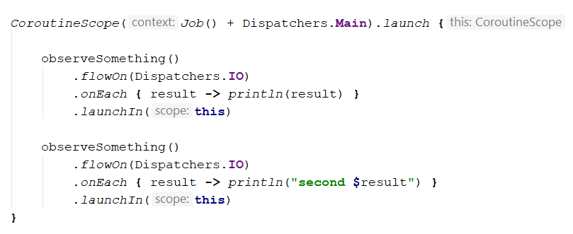
这样，我们创建的代码看起来更像我们之前在 RxJava上写过的那样，因为 RxJava 中的订阅通常不会被阻塞（除非使用了某些 blockingxxx 函数）。因此对于类似的情景，似乎 launchin 应该是我们的首选。
flowOf
为 flowOf 假设的情景与 Observable.just 类似：我们现在需要进行一些计算（挂起的），那么它将在外部范围内完成，不受 flowOn 的影响：
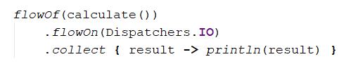
如果在带有 Dispatchers.Main 的上下文中运行，那么 calculate 将在主线程上完成而不是输入输出上运行。
为了解决这个问题，您可以使用 flow 构建器并在其中明确定义内容：
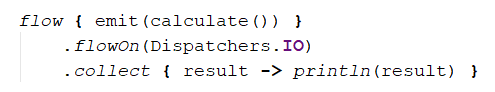
然后将在输入输出线程上进行计算。
FlatMapMerge 并发和并行
为了了解 Kotlin Flow 如何与 flatMapMerge（对 RxJava 中 flatMap 的模拟）一起使用，我们将使用一些测试示例：
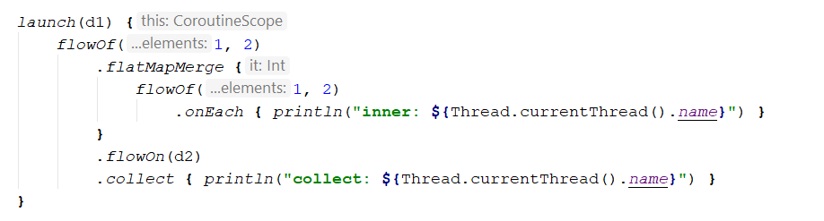
在这里，我们有在 d1 调度器上收集的流。这个流有两个项目，每个项目都平面映射到其他两个项目上。而且我们在 d2 调度器上有一个 flowOn 定义。
在代码中，我们添加了 onEach 的调用，用于输出执行的线程的信息。
在此示例中，输出为：
inner: pool-2-thread-2 @coroutine#4
inner: pool-2-thread-3 @coroutine#5
inner: pool-2-thread-3 @coroutine#5
inner: pool-2-thread-2 @coroutine#4
collect: pool-1-thread-2 @coroutine#2
collect: pool-1-thread-2 @coroutine#2
collect: pool-1-thread-2 @coroutine#2
collect: pool-1-thread-2 @coroutine#2
因此，我们发现与 RxJava 不同的是，即使我们将 flowOn 放在其中的 flatMapMerge 之外（之后），flowOn 也会通过在多个线程上并行运行来影响其中的代码执行。
那么我们将 flowOn 放在 flatMapMerge 中：
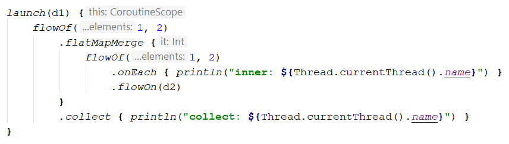
we’ll see the following result:
inner: pool-2-thread-2 @coroutine#6
inner: pool-2-thread-1 @coroutine#7
inner: pool-2-thread-2 @coroutine#6
inner: pool-2-thread-1 @coroutine#7
collect: pool-1-thread-3 @coroutine#2
collect: pool-1-thread-3 @coroutine#2
collect: pool-1-thread-3 @coroutine#2
collect: pool-1-thread-3 @coroutine#2
同样，每个内部流都在其自己的线程的第二个池在上运行。因此，在哪里定义 flowOn 似乎没有什么区别。
但是其实有一个区别 —— 让我们通过在第一个 flowOf 调用下面添加 onEach 来看看它是什么：
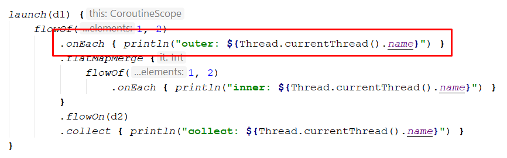
The result will be:
outer: pool-2-thread-1 @coroutine#3
outer: pool-2-thread-1 @coroutine#3
inner: pool-2-thread-2 @coroutine#4
inner: pool-2-thread-3 @coroutine#5
inner: pool-2-thread-3 @coroutine#5
inner: pool-2-thread-2 @coroutine#4
collect: pool-1-thread-2 @coroutine#2
collect: pool-1-thread-2 @coroutine#2
collect: pool-1-thread-2 @coroutine#2
collect: pool-1-thread-2 @coroutine#2
That means that everything above flowOn is run on the second pool. Outer is on the first thread and each inner flow on its own (second and third):
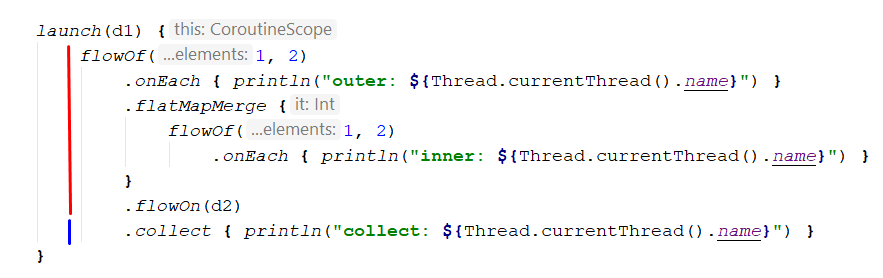
In red it is shown running on d2, and in blue — on d1 .
Now let’s see what would be if we put flowOn inside flatMapMerge:
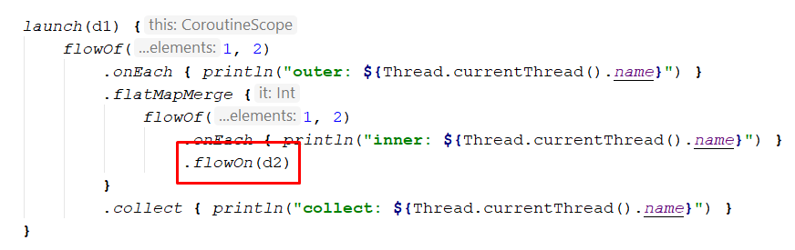
The output will be:
outer: pool-1-thread-2 @coroutine#3
outer: pool-1-thread-2 @coroutine#3
inner: pool-2-thread-1 @coroutine#6
inner: pool-2-thread-2 @coroutine#7
inner: pool-2-thread-1 @coroutine#6
inner: pool-2-thread-2 @coroutine#7
collect: pool-1-thread-3 @coroutine#2
collect: pool-1-thread-3 @coroutine#2
collect: pool-1-thread-3 @coroutine#2
collect: pool-1-thread-3 @coroutine#2
We see that outer now runs on the d1 and therefore not affected by flowOn:
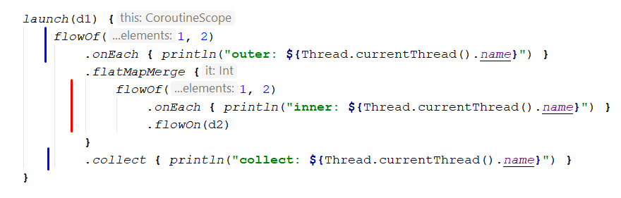
And that’s the difference.
Comparison
Now let’s make some comparison and conclusion and also see few examples.
From the comparison part both RxJava and Kotlin Flow represent cold streams. Both have general operators and approaches for changing threading (schedulers or dispatchers) in the chain.
Control of threading
In RxJava for threading Schedulers are used (most common io(), computation(), mainThread())
In Kotlin Flow for threading Dispatchers are used ****(most common IO, Default, Main)
Threading operators
In RxJava we declare on which scheduler chain should be subscribed (started) using subscribeOn, and where it should proceed using observeOn.
在 Kotlin Flow 中，我们使用收集流的 Scope 定义了在使用在哪个上下文（调度器）上收集完这个链，以及在 flowOn 之前它的执行的地方。
这就像是个倒过来的方法。在 RxJava 中，我们在下面声明启动和修改链。
而在 Kotlin Flow 中，我们声明用于在上面修改链。
迁移例子
考虑一下，我们有一些复杂的 RxJava 链，我们希望迁移到 Kotlin Flow，并保持线程逻辑不变。从上文中我们已经了解到，基本上遵循上下颠倒的思维方式就可以了。当然，我们完成代码迁移后，还要记得进行测试。
同样，我们应该已经记住： RxJava 中的非阻塞线程和在协程之间重用线程并挂起是不同的方法，而且两者是无法建立精确的一对一关系的。尽管我们可以施加一些约束，但是我们希望将并行性保持在我们拥有并行性的位置，并在相同的线程池上运行相同的代码块。
为了使我们的测试示例尽可能正确，我们将在调度器之间使用 Java 执行程序。
RxJava 的部分：
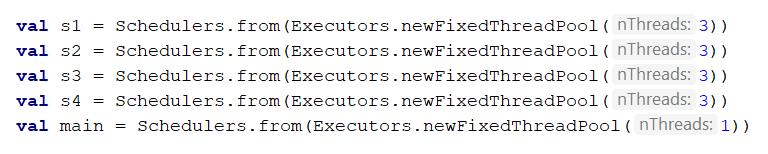
Kotlin Flow 的那一部分：
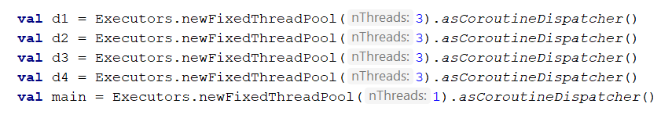
我们将拥有 4 个包含 3 个线程的池，而主要执行者只有 1 个线程。
我们的 RxJava 的示例将如下所示：
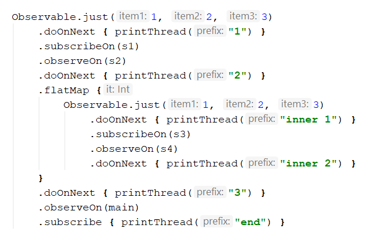
在这里，我们有三个项目流，它们从 s1 开始，然后将执行切换到 s2。在 flatMap 内部，我们设下了可观察的订阅（允许并行）以及一些线程切换。然后，在平面映射之后，我们进行了一些代码的执行并在主线程中打印结果。
运行程序后，我们将看到以下输出：
1: pool-1-thread-1
1: pool-1-thread-1
1: pool-1-thread-1
2: pool-3-thread-1
2: pool-3-thread-1
2: pool-3-thread-1
inner 1: pool-4-thread-1
inner 1: pool-4-thread-2
inner 1: pool-4-thread-1
inner 1: pool-4-thread-1
inner 1: pool-4-thread-2
inner 1: pool-4-thread-2
inner 1: pool-4-thread-3
inner 2: pool-5-thread-1
inner 2: pool-5-thread-2
3: pool-5-thread-1
inner 2: pool-5-thread-2
inner 1: pool-4-thread-3
inner 2: pool-5-thread-2
inner 2: pool-5-thread-3
3: pool-5-thread-1
3: pool-5-thread-1
3: pool-5-thread-1
end: pool-6-thread-1
end: pool-6-thread-1
inner 1: pool-4-thread-3
end: pool-6-thread-1
3: pool-5-thread-1
inner 2: pool-5-thread-1
3: pool-5-thread-1
inner 2: pool-5-thread-3
inner 2: pool-5-thread-1
end: pool-6-thread-1
3: pool-5-thread-3
3: pool-5-thread-3
end: pool-6-thread-1
inner 2: pool-5-thread-3
3: pool-5-thread-3
end: pool-6-thread-1
end: pool-6-thread-1
end: pool-6-thread-1
end: pool-6-thread-1
它很长，但是应该符合我们之前写的假设。
让我们直观化显示一下数据：
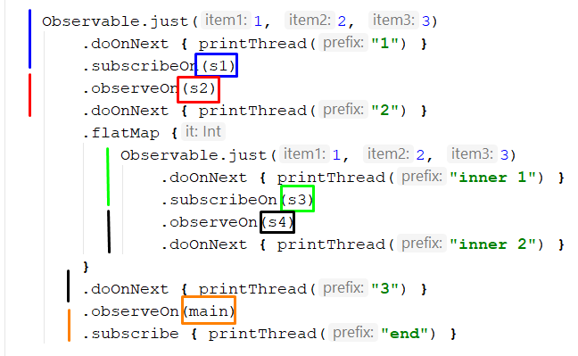
在这里，我们可以精确地看到上面所述的内容。其中需要重点关注的内容是，3 与 inner 2 在同一调度器上运行。我们有两个起点（初始起点和内部起点），在这里我们将 subscribeOn 允许在内部并行。然后移动到链的下方，并在必要时添加了 observeOn 的定义。
现在，我们切换到 Kotlin Flow 的版本：
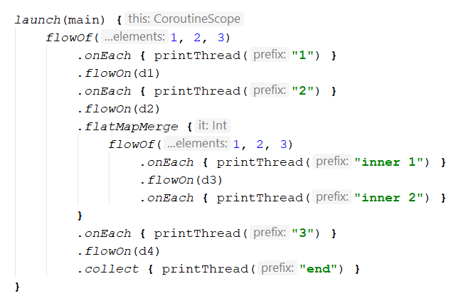
从一开始，我们就将主线程固定为结束的线程。然后我们从最下面开始看起，我们在需要的地方添加 flowOn。首先，我们添加了 d4 并注意到 inner 2 也应在其上运行。然后，我们切换到 d3，依此类推，直到链的最顶端。结果如下：
1: pool-1-thread-1 @coroutine#6
1: pool-1-thread-1 @coroutine#6
1: pool-1-thread-1 @coroutine#6
2: pool-2-thread-2 @coroutine#5
2: pool-2-thread-2 @coroutine#5
2: pool-2-thread-2 @coroutine#5
inner 1: pool-3-thread-1 @coroutine#10
inner 1: pool-3-thread-2 @coroutine#11
inner 1: pool-3-thread-3 @coroutine#12
inner 1: pool-3-thread-2 @coroutine#11
inner 1: pool-3-thread-3 @coroutine#12
inner 2: pool-4-thread-3 @coroutine#9
inner 1: pool-3-thread-1 @coroutine#10
inner 1: pool-3-thread-3 @coroutine#12
inner 1: pool-3-thread-2 @coroutine#11
inner 2: pool-4-thread-1 @coroutine#7
inner 2: pool-4-thread-2 @coroutine#8
inner 2: pool-4-thread-1 @coroutine#7
inner 2: pool-4-thread-3 @coroutine#9
inner 1: pool-3-thread-1 @coroutine#10
3: pool-4-thread-1 @coroutine#3
inner 2: pool-4-thread-3 @coroutine#9
inner 2: pool-4-thread-2 @coroutine#8
end: pool-5-thread-1 @coroutine#2
3: pool-4-thread-1 @coroutine#3
inner 2: pool-4-thread-2 @coroutine#8
3: pool-4-thread-1 @coroutine#3
end: pool-5-thread-1 @coroutine#2
3: pool-4-thread-1 @coroutine#3
end: pool-5-thread-1 @coroutine#2
end: pool-5-thread-1 @coroutine#2
3: pool-4-thread-1 @coroutine#3
3: pool-4-thread-1 @coroutine#3
end: pool-5-thread-1 @coroutine#2
end: pool-5-thread-1 @coroutine#2
3: pool-4-thread-1 @coroutine#3
3: pool-4-thread-1 @coroutine#3
end: pool-5-thread-1 @coroutine#2
end: pool-5-thread-1 @coroutine#2
inner 2: pool-4-thread-1 @coroutine#7
3: pool-4-thread-1 @coroutine#3
end: pool-5-thread-1 @coroutine#2
除了日志的外观不同（因为 RxJava 与协程不同），我们仍然可以看到所有逻辑仍然适用，并且我们没有破坏并行执行。
虽然我们仍然可以看到一些差异。例如，我们在RxJava示例中运行“ 3”的代码在以下位置运行：
3: pool-5-thread-1
...
3: pool-5-thread-3
在协程示例中，它总是在一个线程上运行：
3: pool-4-thread-1 @coroutine#3
这可能是由于并发而引起的巧合，也可能是因为协程程序更好地利用了线程的使用（或者可能不是，实际上我不知道，所以如果有人有其他想法，可以毫不犹豫地发布响应）。尽管我们不太在乎，因为无论如何线程池的使用都是正确的。
如果我们可视化线程，则可以执行以下操作：
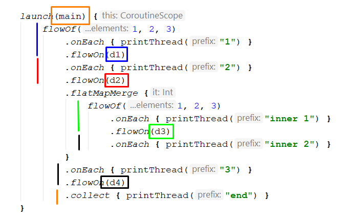
小结
Kotlin Flow 真的不错，可以跟 RxJava Observable 相媲美。它们的使用方法和支持的运算符都相似，相似的运算符，并且都在其链内处理线程。他们在使用 Observable.just 或 flowOf 时也有类似的技巧。但是就并发性和并行性而言，Kotlin Flow 似乎更简洁。同样，Kotlin Flow 也没有诸如带有 subscribeOn 的 RxJava 这样的问题，因为在流程中，我们用作用域声明了链的末尾，从技术上讲，不可能将它们放多个。
在处理线程的方式上，Kotlin Flow 和 RxJava 是相反的。在 RxJava 中，我们认为是从上到下，而在 Kotlin Flow 中则是从下到上。但无论如何，如果有必要，在不破坏大部分功能的前提下，将代码进行反向迁移也是可行的。
希望您喜欢这篇文章，但愿它对您有所帮助
祝你编程快乐！
如果发现译文存在错误或其他需要改进的地方，欢迎到 掘金翻译计划 对译文进行修改并 PR，也可获得相应奖励积分。文章开头的 本文永久链接 即为本文在 GitHub 上的 MarkDown 链接。
掘金翻译计划 是一个翻译优质互联网技术文章的社区，文章来源为 掘金 上的英文分享文章。内容覆盖 Android、iOS、前端、后端、区块链、产品、设计、人工智能等领域，想要查看更多优质译文请持续关注 掘金翻译计划、官方微博、知乎专栏。